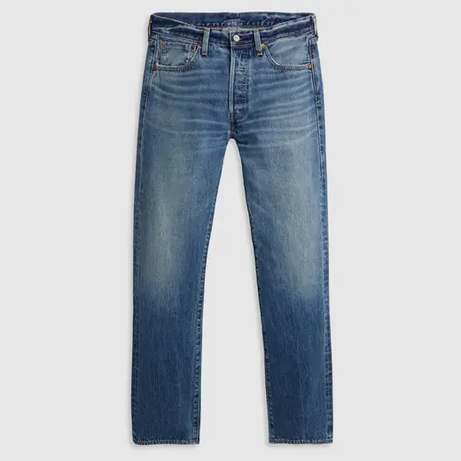
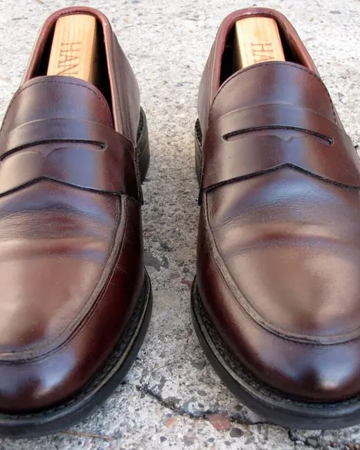
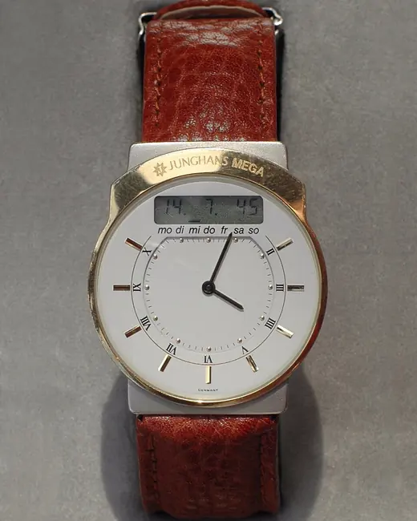
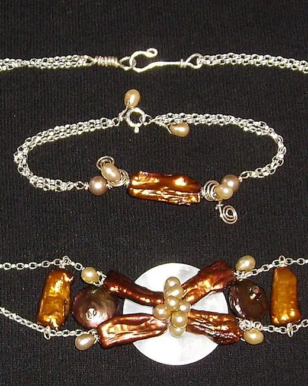

This week
Client Fitting Day
6 pieces




Launch Party
5 pieces


Quick schedule
Every day left on this page has an entry. The week ahead is open.
Calendar — at rest. The rail of days replaces seven stacked day-cards: one bead per entry, hatched for a wear on the record and open-eyelet for a plan, with Tuesday ringed by hand. Tapping a tick plucks its thread and re-inks the day plate below, where the entries are ruled rows — seal, pieces, photographs, UNDO — not cards framed inside a card. Past days show + LOG only, future days + PLAN only; today keeps both.
Reformer Pilates
Planned · 4 pieces
Studio-to-Street
Planned · 6 pieces
Edit-Day Home Set
Planned · 5 pieces
Quick schedule
Every day left on this page has an entry. The week ahead is open.
The tag is punched, strung, and tied on
+ PLAN — the tag is tied on. 500ms: the punch lifts a disc, thread spools down, and the tag ties to Wednesday's thread while the day tick gains an outlined bead. Removing a plan runs it backwards — the tag slides off, the bead erases, and a strung-tag snackbar offers UNDO. Reduce Motion swaps the travel for an instant state change.